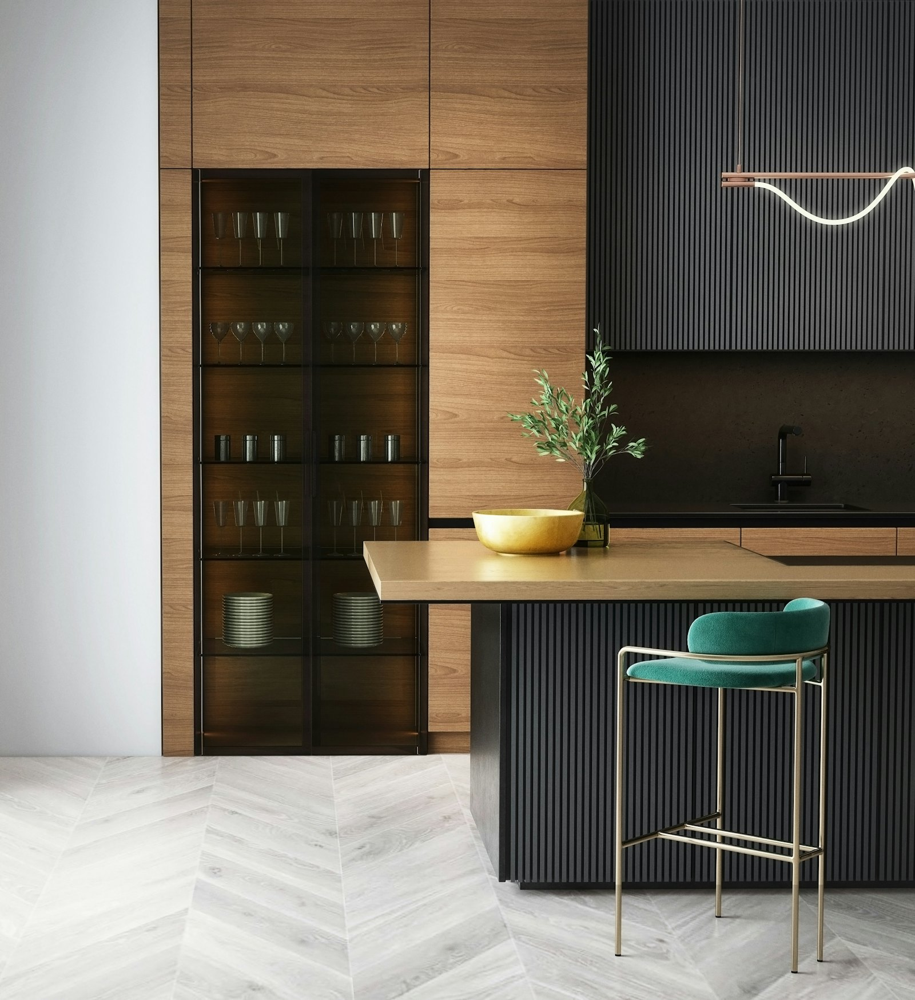
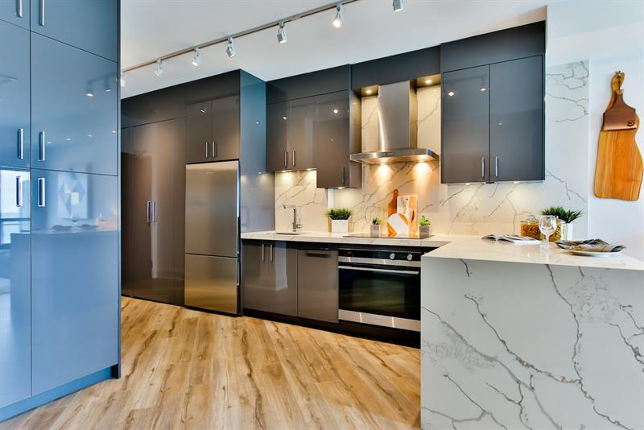
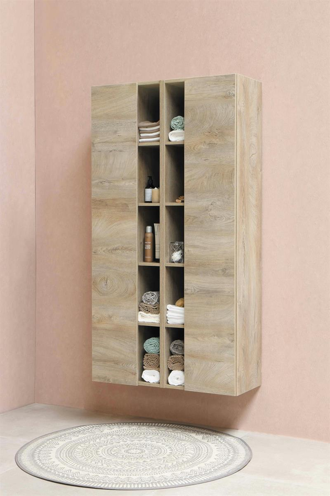
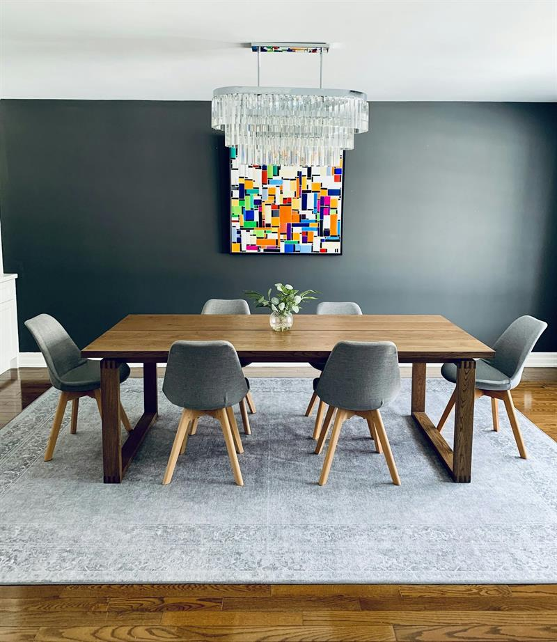
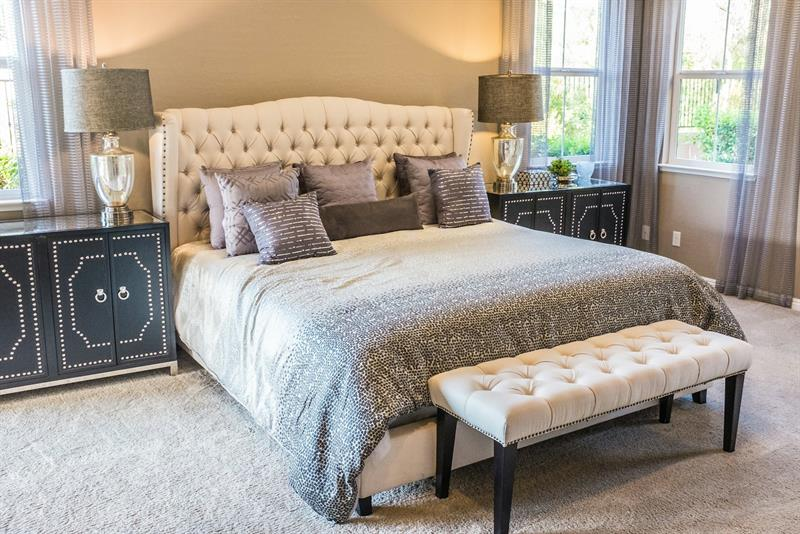
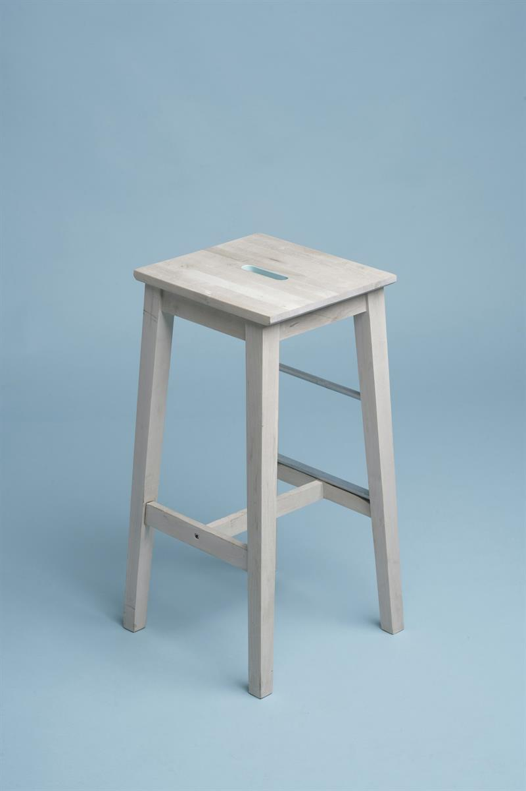
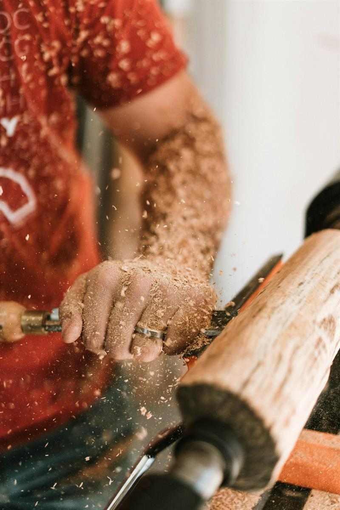
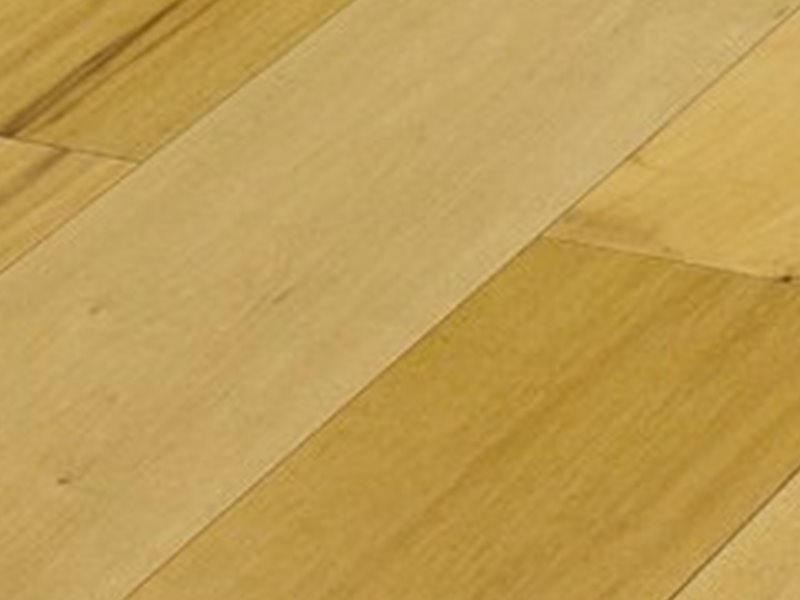
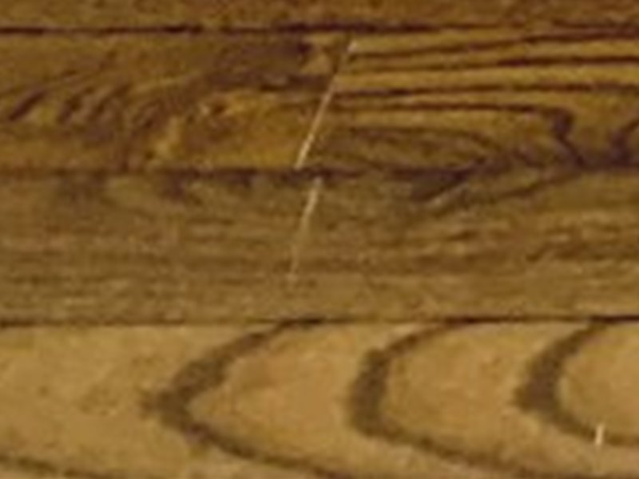

Ąžuolas
- Savybės
- Kietas ir sunkus, su ryškiu rievių raštu. Laikui bėgant šiek tiek patamsėja.
- Tinka
- Stalams, stalviršiams ir kitiems kasdien naudojamiems paviršiams.
Baldų dirbtuvė Kaune
Projektuojame ir gaminame virtuves, spintas, stalus ir miegamojo baldus iš medienos pagal tikslius patalpos matmenis. Atsiųskite eskizą ar išmatavimus, o mes pasakysime, ką galima padaryti.

01Gaminiai
Kiekvienas gaminys prasideda nuo patalpos: jos matmenų, šviesos ir to, kaip ja naudojatės kasdien. Todėl katalogo neturime, o baldus projektuojame kiekvienam užsakymui atskirai.





Pasirinkus gaminį, jis bus pažymėtas užklausos formoje.
Iliustracinės interjerų nuotraukos, ne mūsų atlikti darbai. Jos padeda aptarti, kokios nuotaikos, spalvų ir formų norite.
02Kaip dirbame
Tikslią kainą ir gamybos terminą galime pasakyti tik žinodami matmenis, medieną, apdailą ir furnitūrą. Todėl pirmiausia kalbamės ir matuojame, o tik tada skaičiuojame.

Papasakojate, ko reikia: kuriai patalpai, kokio dydžio, kokios nuotaikos. Praverčia eskizas, patalpos nuotraukos ar jums patinkančių baldų pavyzdžiai.
Išmatuojame patalpą vietoje ir įvertiname sienų, grindų ir kampų nelygumus, lizdus, vamzdžius ir angas.
Parengiame brėžinius su matmenimis, aptariame medieną, apdailą ir furnitūrą. Pateikiame kainą ir terminą. Projektą taisome, kol jis jums tinka.
Gaminame savo dirbtuvėje Kaune. Prieš apdailą galite atvykti ir pamatyti gaminį.
Atvežame, surenkame ir sureguliuojame vietoje. Paaiškiname, kaip prižiūrėti paviršių.
03Mediena ir apdaila
Nuotraukose – tikrų rūšių mėginiai, padengti apdaila, todėl jų tonas šiltesnis nei neapdorotos medienos. Ekrane spalvos atrodo kitaip nei tikrovėje. Tikrus medienos ir apdailos pavyzdžius parodysime dirbtuvėje arba atvešime matavimo metu.
Nuotraukos: Achim Raschka, Wikimedia Commons (ąžuolas, uosis, riešutmedis, beržas), CC BY-SA 3.0, apkirptos.
Apdaila lemia, kaip paviršius atrodo, kaip jaučiasi po ranka ir kaip jį prižiūrėti.


04Klausimai
Neradote atsakymo? Paskambinkite +370 600 00000 arba parašykite info@azuolobaldai.lt.
Taip. Eskizas, nuotrauka ar patikusio baldo pavyzdys padeda greičiau suprasti, ko norite. Matmenis ir konstrukciją vis tiek patiksliname patys, kad baldas tiktų būtent jūsų patalpai.
Užtenka apytikslių matmenų: sienos ilgio, aukščio iki lubų ir gylio, kurį galima užimti. Matuokite keliose vietose, nes sienos retai būna visiškai tiesios. Pažymėkite langus, duris, radiatorius, lizdus ir vamzdžius. Ranka nupieštas planas su skaičiais visiškai tinka. Galutinius matmenis išmatuojame patys.
Nuo baldo dydžio, medienos rūšies, apdailos, furnitūros (vyrių, bėgelių, apšvietimo) ir montavimo sudėtingumo. Todėl kainos „už metrą“ iš anksto neskelbiame. Pasakykite, kokį biudžetą planuojate, ir pasiūlysime sprendimą, kuris į jį telpa.
Mediena sugeria ir atiduoda drėgmę, todėl šildymo sezonu ji šiek tiek susitraukia, o vasarą išsiplečia. Konstrukciją projektuojame taip, kad šis judėjimas nepakenktų. Namuose patartina palaikyti maždaug 40–60 % santykinę oro drėgmę.
Valykite drėgna, gerai išgręžta šluoste, be agresyvių valiklių. Karštus indus dėkite ant padėklo. Alyvuotą paviršių kartkartėmis papildomai sutepkite priežiūros alyva, o lakuotą užtenka tiesiog nuvalyti.
Dažnai taip, jei baldas iš medienos masyvo ir jo konstrukcija sveika. Atsiųskite kelias nuotraukas iš skirtingų pusių, ir pasakysime, ką galima padaryti.
05Kontaktai
Užpildykite formą arba paskambinkite. Jei turite eskizą ar patalpos nuotraukų, pridėkite jas.
Žemėlapis įkeliamas iš „Google Maps“ tik paspaudus mygtuką. Įkėlus „Google“ gali įrašyti savo slapukus.